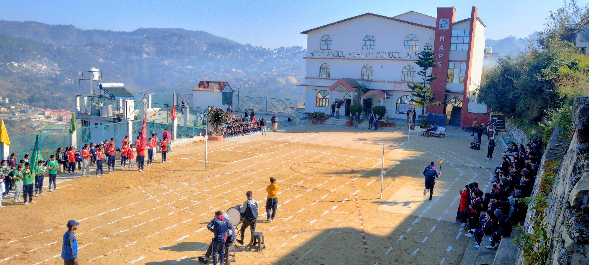

My Background & Focus
A professional look into my experience, goals, and technical foundations.
Professional Summary
I am an enthusiastic and results-oriented Frontend Developer with 2 years of professional experience designing, building, and optimizing responsive web interfaces. During my tenure at Expo Growth, under the valuable guidance of Devendra Sir, I developed a strong foundation in modern frontend coding, Conversion Rate Optimization (CRO), A/B Testing implementation, and Quality Assurance (QA) testing.
I specialize in transforming complex UI/UX wireframes into responsive, pixel-perfect layouts using clean HTML, CSS, JavaScript, and modern frameworks. Beyond building clean templates, I focus heavily on optimizing page load speeds, analyzing Core Web Vitals, and implementing data-driven A/B tests that improve business conversions. My detailed QA workflows ensure that websites work flawlessly across Windows PCs, MacBooks, and multiple mobile viewports.
2+ Years
Professional Experience
Frontend Web
Pixel-Perfect Coding
CRO & A/B Testing
Conversion Optimization
QA Testing
Cross-Browser Validation
Key Career Highlights
Beyond Coding
Beyond coding, I enjoy activities that help me stay creative, disciplined, and continuously learn new things. These interests inspire my problem-solving mindset and maintain a healthy work-life balance.
I enjoy learning about personal finance, investing, financial markets, and long-term wealth creation. I continuously explore strategies that improve financial knowledge and decision-making.
I enjoy staying active by playing outdoor games that improve teamwork, focus, and discipline.
Playing cricket has helped me develop patience, strategic thinking, and collaboration.
Badminton keeps me physically active while improving concentration, speed, and reflexes.
I enjoy football because it encourages teamwork, communication, and quick decision-making.
I enjoy playing the guitar and exploring different musical instruments. Music helps me stay creative, relaxed, and focused.
Listening to music helps me relax, stay motivated, and maintain focus while working or learning.
I enjoy watching movies from different genres to explore storytelling, creativity, and new perspectives.
I enjoy cooking and trying different cuisines. Cooking helps me improve creativity, patience, and attention to detail.
"Great ideas often come from experiences beyond the screen. My hobbies help me stay creative, curious, and continuously inspired."
Academic Timeline
My educational background and extracurricular accomplishments.
Bachelor of Computer Applications (BCA)
Indira Gandhi National Open University (IGNOU)
- Studying core Computer Science and Software Engineering fundamentals.
- Deepening knowledge in Web Development, Programming languages, and Database Systems.
- Applying academic concepts to professional frontend tasks and real-world client websites.
Higher Secondary Education (Class XII)
Holy Angel Public School

Secondary Education (Class X)
Holy Angel Public School
Extracurricular Activities
Sports & Teamwork
- Participated actively in multiple school sports and athletic events.
- Developed soft skills in leadership, clear communication, and group dynamics through team sports.
- Built mental fortitude, consistency, self-discipline, and a healthy competitive drive.